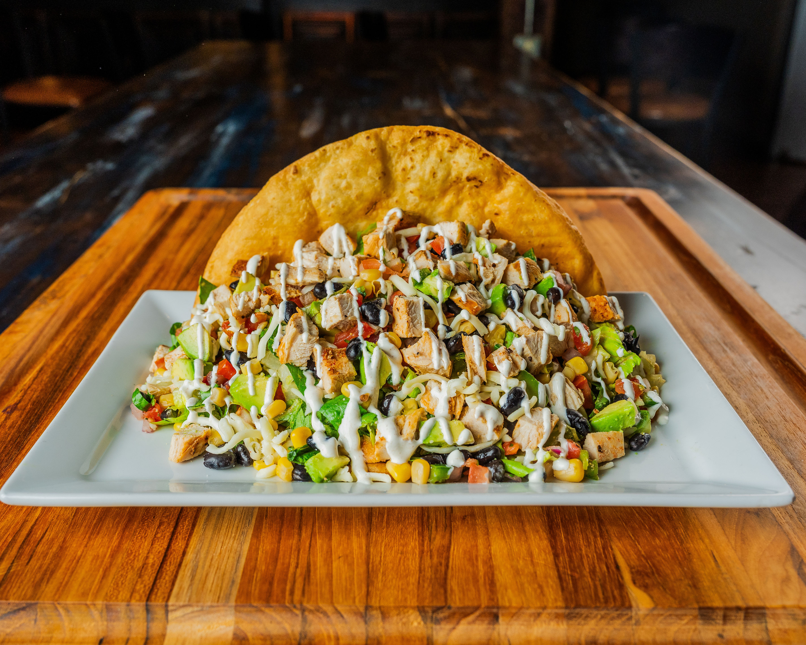
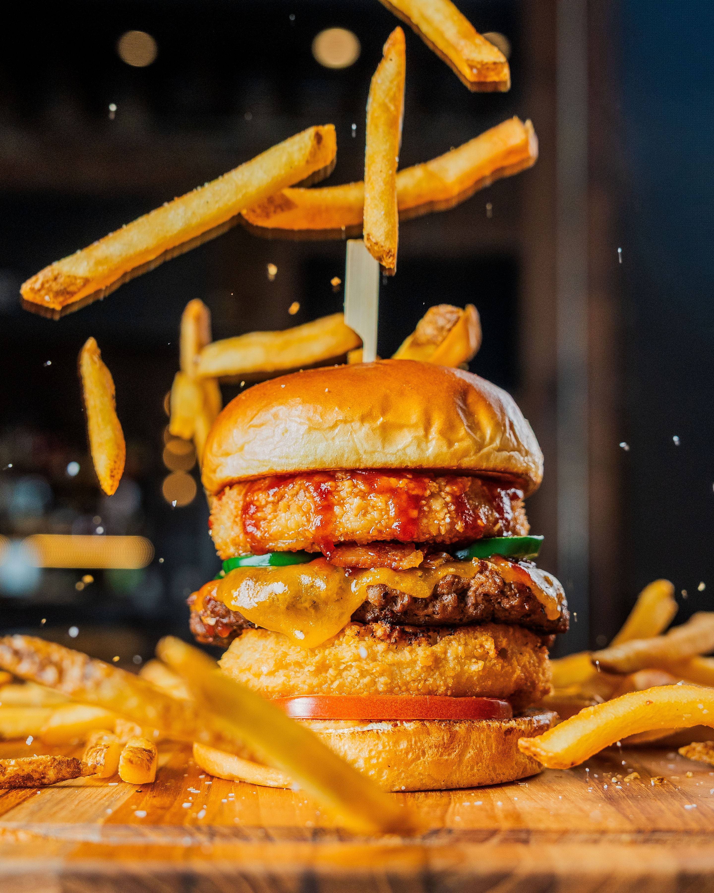
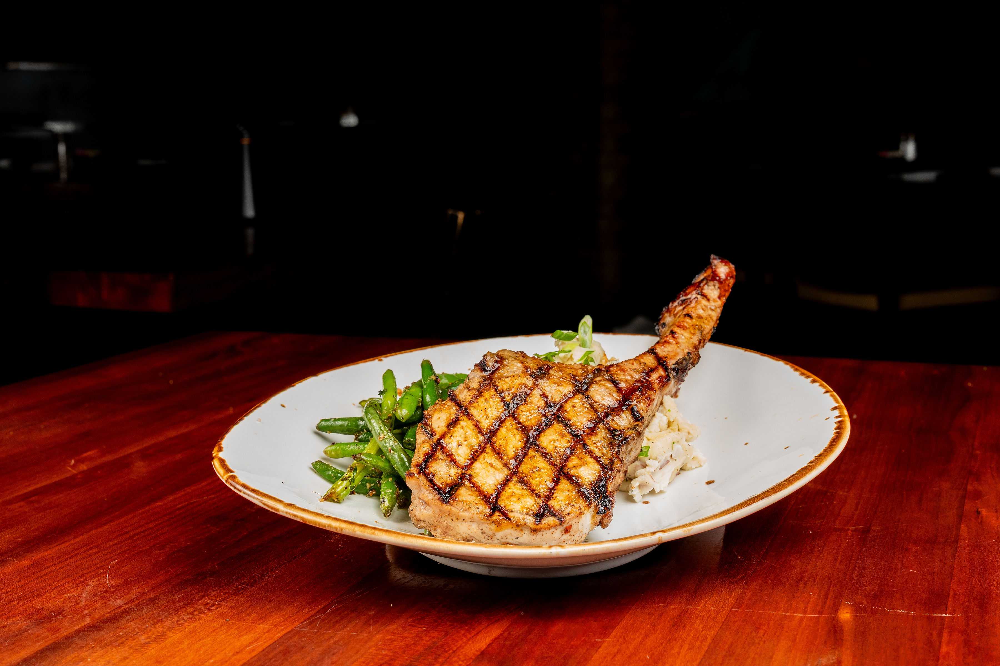

PORTFOLIO
Here are examples of my photography work.
SPORTS PHOTOGRAPHY
Syracuse Athletics
I photograph games and athletes for Syracuse Athletics. This includes multiple sports throughout the year.


Basketball
Action shots from games at the Carrier Dome. I capture fast plays, important moments, and the energy of college basketball.
Football
Game day photography including plays, sideline moments, and celebrations. I shoot both action during games and team activities.
Soccer
Photos of Syracuse soccer showing goals, defensive plays, and teamwork on the field.
Other Sports
I also cover track and field, lacrosse, swimming, and other Syracuse sports programs.
Athlete Photos
I take portrait photos of individual athletes. These photos use good lighting and show each athlete's personality. Athletes use these for social media, recruiting, and team materials.
FOOD PHOTOGRAPHY
Restaurant Photos
I work with restaurants to create photos for their menus, websites, and social media. I focus on making food look fresh and tasty.



Menu Items
Photos of plated dishes that show off the food's colors, textures, and presentation. Good for fine dining restaurants and cafes.
Casual Food
Burgers, pizza, and other comfort foods shot to look fresh and tasty.
Behind the Scenes
Photos showing how food is prepared and the ingredients used. Great for restaurants that want to show their process.
Social Media
Photos made specifically for Instagram and Facebook. These are designed to get attention and likes from followers.
MY APPROACH
Whether I'm shooting sports or food, I focus on telling a story with each photo. For sports, that means capturing the emotion and action. For food, it means making dishes look as good as they taste.
WANT TO WORK TOGETHER?
If you need photography for sports, food, or something else, check out my contact page to get in touch.